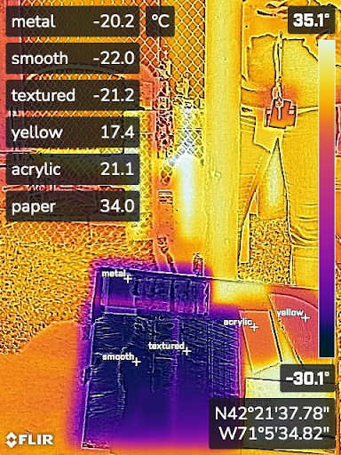

### Week 7
##### _Monday, October 17_
On Monday, we learned how to use Fusion360 to make sketches of parts and of the reflection of sunlight. We utilized some basic building tools and contraint tools to make a ray tracing sketch.
Here is the jist of what our sketches were supposed to look like:
<img src="./ray tracing.png" alt="ray tracing" width="500"/>
I was struggling quite a bit to follow Justin and get a hang of the functionalities, so my sketch wasn't fully made but I was able to get a start,
<img src="./britt tracing.png" alt="britt tracing" width="500"/>
After a while, we looked at last year's prototype to discuss what elements we wanted to improve or keep in our final design. One glaring issue we wanted to solve was the immense weight of the cooker. The stepper motors can only translate so much weight, so to give them the best shot at working, we sought to reduce the weight of the cooker as much as possible. We did consider methods such as counter-balancing, but we knew that our best shot was to simply reduce the absolute weight rather than trying to work around the weight.
##### _Wednesday, October 19_
On Wednesday, we tested different reflecting materials to decide how we can improve our efficiency of our final product. We tested a strip of steel, 2 types of reflective tape, a coated material, an acrylic piece used in our reflector, and a piece of the box solar cooker from previous weeks. We set them outside and recorded initial temps, all of which were around 20 or 21 degrees.
We tilted the foam board that the samples were on towards the sky to measure how well the samples reflected the temperature of the sky; good reflectors would be ones that had similar temps to the sky, and poor reflectors would be ones that were warmer than the sky.
Of our 6 samples, the best reflectors were the 2 reflective tape types and the steel strip. The coated material, the acrylic piece, and the piece of the box solar cooker were all very poor reflectors.
Here is a picture of the heat signatures, taken by Anna:
